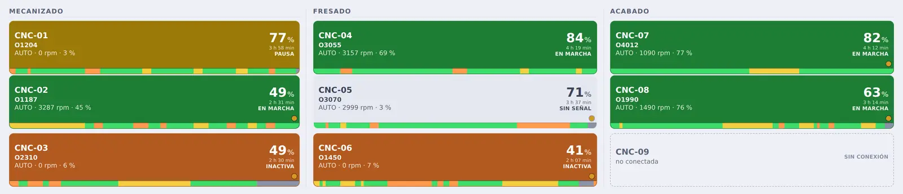
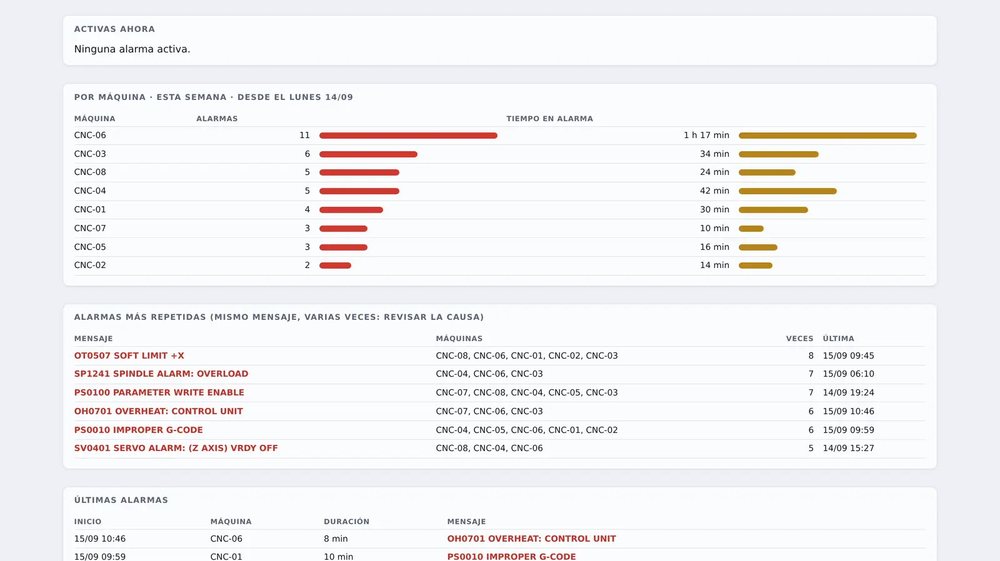
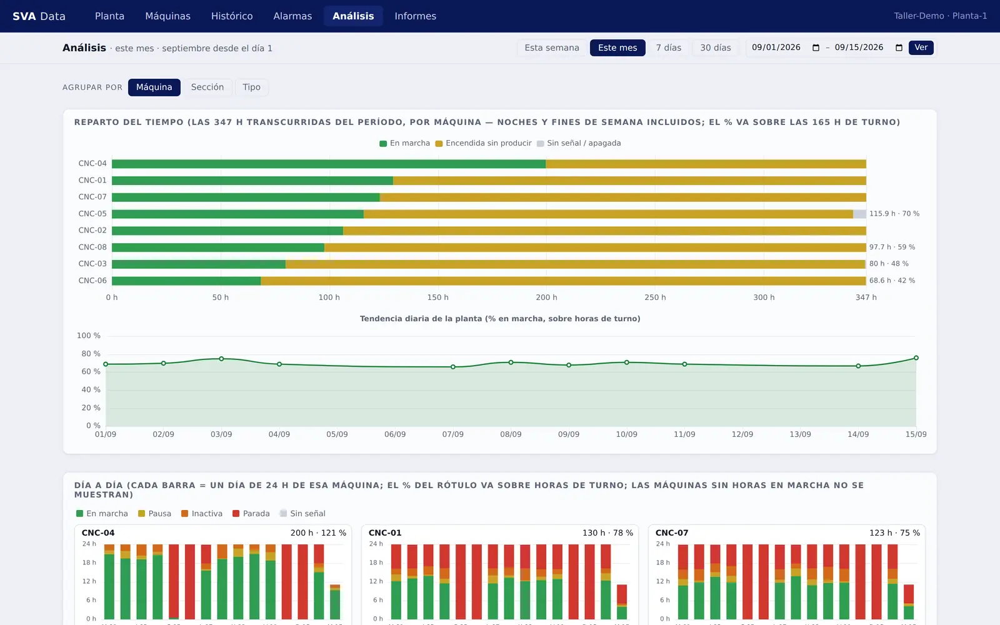
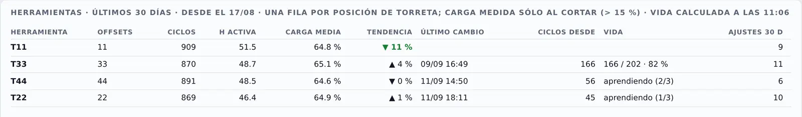

En tiempo real, con histórico, y lista para decidir.
Máquinas, sensores y ERP en una sola base de datos. Tu equipo la ve en el portal, en los tableros y en su propio Excel.
Siete protocolos de máquina · una base de datos · lectura, nunca escritura.
El problema
Cada uno guarda sus datos donde le conviene, y nadie cruza la parada con la orden que corría. La respuesta acaba en un exporte, un Excel y la memoria de alguien.
Conecta una vez. Decide siempre. Cada fuente entra una vez; cualquier pregunta se responde cruzándolas todas.
El producto
Una web dentro de la red de la planta: sin instalar nada en los puestos, sin licencia por usuario, y sin escribir jamás en el control.

Capturas reales del portal con datos sintéticos (CNC-01…CNC-08, septiembre de 2026). El producto es el que ves; los números de estas capturas, no.
Cómo está hecho
Cada una responde una pregunta distinta y todas leen la misma base de datos. No se compran por separado: la interfaz que ves aquí es la que se instala.
Máquina (MDE) · Operación (BDE) · Proceso · Calidad



El cambio de plaquita no lo anuncia el control. Lo deducimos del salto en el corrector cuando el operario la vuelve a medir — y de ahí sale la vida típica.
La instalación
Todo dentro de tu planta. Sin nube obligatoria.